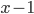
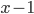
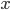
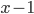

is at commit ID and node
is at commit ID and node  is at commit ID , using the above lemma if we move the state machine through time we will end up with the following colored states.
is at commit ID , using the above lemma if we move the state machine through time we will end up with the following colored states.Reasonable consensus in a dynamic system using chromatic number
Dron Rathore<dron.rathore@gmail.com>
Negotiating and agreeing on certain states within a system has been a classic research area, from paxos, raft to the recent flexible paxos theory all have tried to solve the issue of consensus using various methodologies. In this document I would like to propose a more distinct approach for solving consensus problems in a distributed system.
The first and foremost concept in this approach is to visualise your distributed system as an open graph with the leader being at the center of the node and followers being the vertices of the graph.
The center or the leader position can be swapped by any node that is currently sitting on a vertice, any number of vertices can be added and/or replaced from the system at any point of time as long as the total number of nodes in the system is
The followers can all be in a various different commit ID states, where a commit ID is a universal consistent sequential ID associated with a log message in the system.
The current leader is the one responsible for incrementing the commit ID and moving the state machine forward.
To kick start the system we would need to assign a leader first, the initial state of the system can also be represented as a graph depicted below.
In the initial state all nodes are staking claims to become a leader, the initial state of the individual node is currently a self generated random integer/UUID which is being sent around by individual nodes to all the other nodes. The node which ended up generating the largest value should be elected as a leader, we call this state circle of chaos as the system could easily drift into eternal ping-pong if we are unable to elect a leader because of poor random number generation or any other causes.
The election in this initial state is done with total consensus i.e. all nodes must acknowledge the node which generated the largest value as their leader. Once the total consensus has been reached, the states of nodes will be as following
In a distributed system applying change log to self, distributing it to all the followers, waiting for majority consensus is a standard procedure of operation. However the key component for a state machine system is to define “majority consensus” or “reasonable majority consensus”, the term “majority/reasonable” can be flexed around to tune the system for various types of workload.
In our case we will search for the answer in graph coloring methodology, we will be tweaking the graph coloring methodology to fit our consensus problem.
We begin by introducing 2 key lemmas:
Lemma 1: Given a distributed set of nodes, we define that a Node can uniquely be identified by the last commit ID it has applied to its state machine. |
So if 2 nodes have last applied commit ID as  then both are identical nodes purely for the evaluation of consensus.
Lemma 2: A distributed state machine in which all nodes have applied all the changes is said to be an ideal state machine, as no node is distinguishable from another in terms of the applied changes to their respective state machine. |
An ideal state of the system can be achieved when no new commits are arriving and all the nodes in the system has applied the
Now we would like to introduce the concept of coloring the nodes as our basis to solve consensus problem, using Lemma 1, we introduce a key feature to our system:
Lemma 3: Nodes with same commit ID corresponds to the same color |
Let’s take an example of a system of 3 nodes where the leader is at commit ID , node is at commit ID and node is at commit ID , using the above lemma if we move the state machine through time we will end up with the following colored states.
The last state in the above diagram is what is referred to in lemma 2 as an ideal state machine, in this state any node can be elected as a leader which is the case in the initial state of the system.
To derive a reasonable majority consensus we take a graph of  nodes with being the leader, we replace all the nodes which have the same commit ID with a single node and then assign a unique color to each node, the number of colors used in this stage is the minimum number of acknowledgements required in order to accept a change in the system.
nodes with being the leader, we replace all the nodes which have the same commit ID with a single node and then assign a unique color to each node, the number of colors used in this stage is the minimum number of acknowledgements required in order to accept a change in the system.
For a set of nodes from N1 to Nx each being in state s1, s2, s3 … sx we define the required to reach consensus as:
|
where; state is the commit ID of that particular node
The above gives us the lower bound for any system with as , the assumption here always is that the leader has applied the change and is now waiting for acknowledgement from it’s followers.
The minimum number of acknowledgements required to reach a reasonable consensus in any N node system is 2. |
In a worse case scenario we will have all the nodes lagging behind from the leader and that would force us to reach total consensus before accepting the change.
The maximum number of acknowledgements required to reach a reasonable consensus in any N node system is N. |
The reasonable consensus approach provides us the upper as well as the lower limits for required acknowledgements in an N node system.
Taking the approach away from the enforced fixed requirement of ½ or ⅓ majority, the reasonable consensus approach ensures that we only wait for acks from the optimal minimum required nodes. If a system is in a smooth operation where commits are applied as soon as they arrive at the nodes; we don’t have to wait for a majority consensus as the degree of confidence in the system is high. This increases the overall efficiency & speed of operation for the system.
However let’s assume a case where in an node system, number of nodes are slow to catch up, in that case our rate of confidence in the system’s durability & consistency decreases. The reason being in case of a leader and/or multi node failure we are at risk of losing data, this will trigger the system to automatically increase the required number of acknowledgements, this trait of the system can be termed as self reassuring, though this will come at cost of speed.
As the minimum number of acknowledgements is a dynamic metric, the system is capable of adjusting the required consensus amount on the basis of the number of nodes in the system at a given point of time.
The approach can be further refined in order to strengthen the degree of confidence by introducing a 2 phase feature of soft & hard acknowledgement, where soft ack is when the leader has sent the data over wire and has received the network acknowledgement from a follower. We could increase the requirement for soft commit and further lower our hard acknowledgement requirements.
Another addition in the approach will be to have a monitoring & estimation of reachability speed from leader to follower which can then be shared among all the nodes with a heartbeat as it can help the leader reelection process. I will do a write up on both the features in future.